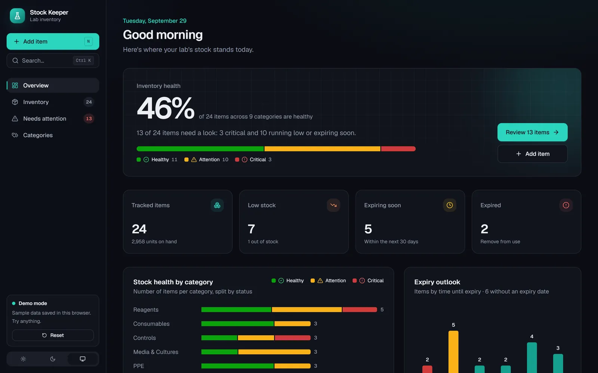
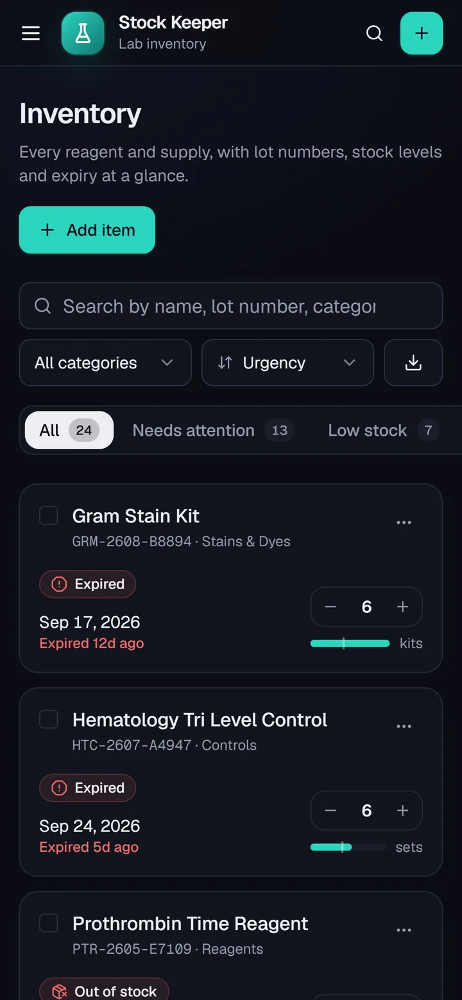
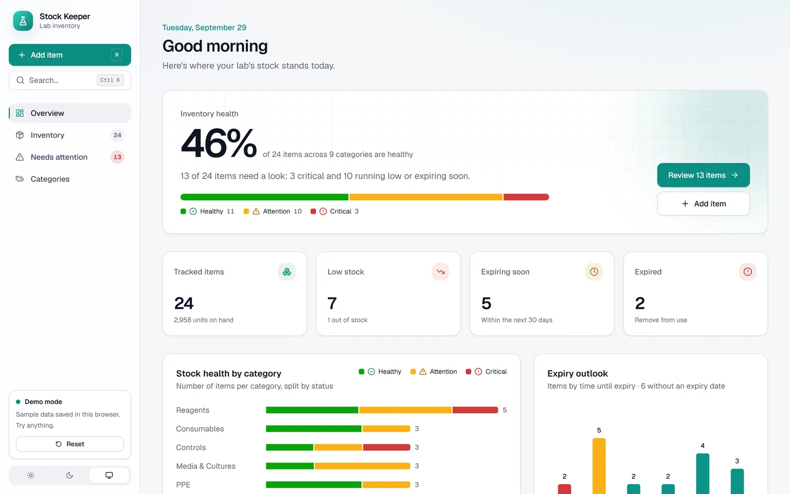
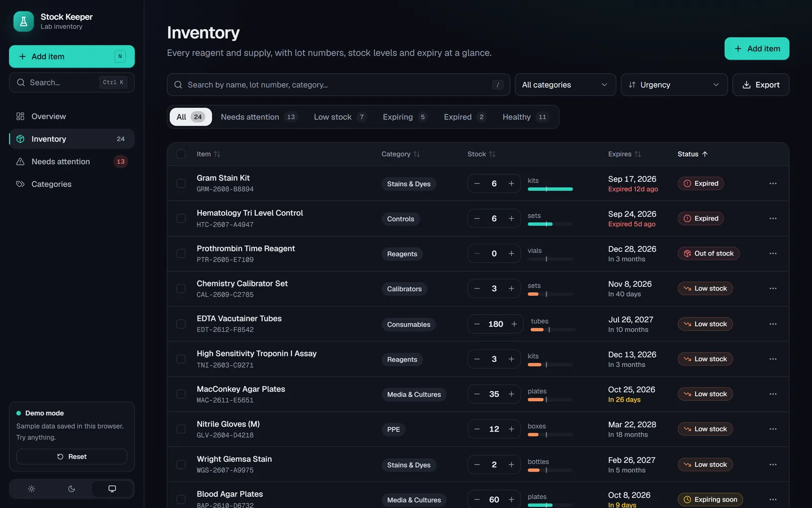
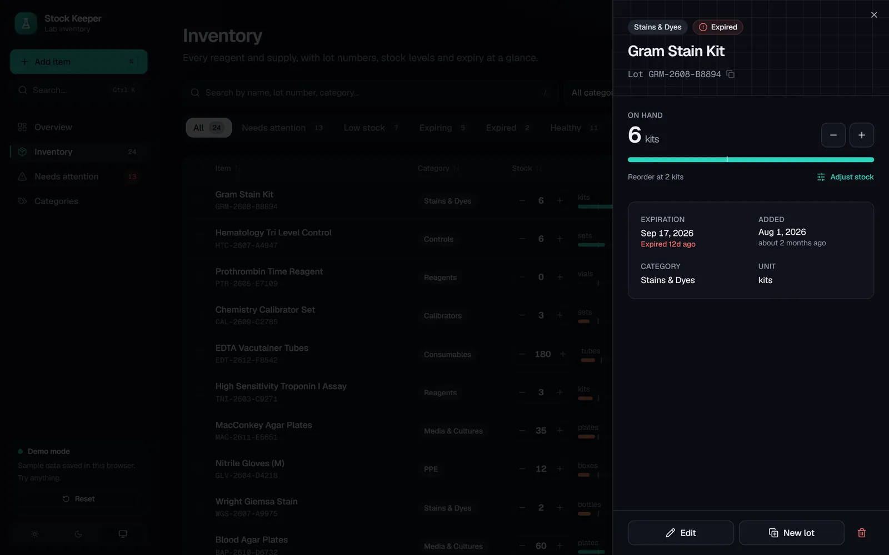
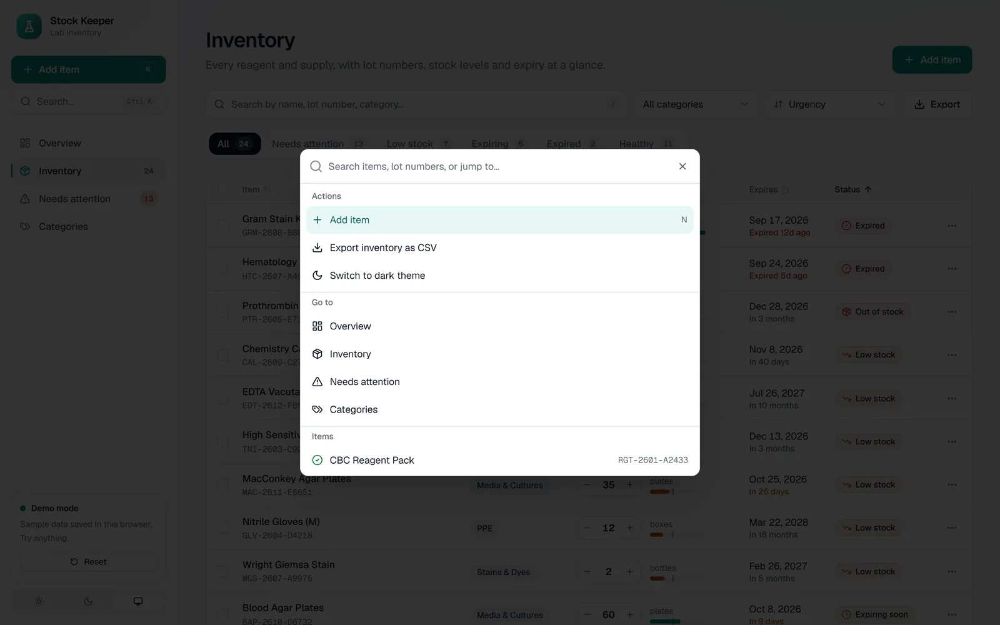
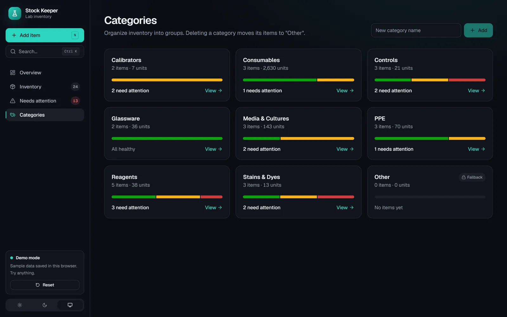
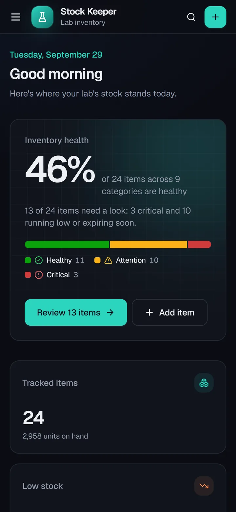

Web app · Lab inventory · 2026
Beaker Counter
A reagent inventory dashboard for medical technologists, shipped as Stock Keeper. It tracks every lot, stock level and expiry date, and tells the lab at a glance what's running low, what's about to expire and what should already be off the shelf.


~ $ cat why.md
Expired reagents shouldn't be a surprise
Clinical labs run on reagents, controls and calibrators that expire, and a missed date means a failed run or a wasted order. Keeping that in a spreadsheet means someone has to remember to look.
Beaker Counter looks for you. Every item carries its lot, quantity, reorder threshold and expiry, and the whole inventory rolls up into one health score with a list of exactly what needs attention today.
~ $ ls ./features
01
One health score for the whole lab
The overview turns the inventory into a single percentage of healthy items, split into healthy, attention and critical. Tiles show what's tracked, low, expiring within 30 days and expired, with a breakdown by category and an expiry outlook chart.
- A prioritised needs attention list
- Upcoming expirations on a timeline

02
A table built for the bench
Search by name, lot, category or unit, filter by status, and sort by any column. Stock changes happen inline with plus and minus steppers, and every row shows its expiry in plain words, like "expired 12 days ago".
- Filters live in the URL, so any view can be bookmarked or shared
- Bulk move, CSV export and delete with an undo toast

03
Every lot, in detail
Opening an item shows its lot number, what's on hand against the reorder point, expiry and when it was added. Receive, use or count stock with a live preview of the resulting status, or receive a new lot with its own expiry.

04
Fast to drive from the keyboard
A command palette on Ctrl + K jumps to any item by name or lot, runs actions like adding an item or exporting, and switches themes. Categories group the stock, each with its own health bar and a count of what needs attention.
- Shortcuts for adding items and focusing search
- Light and dark themes with reduced motion support


05
Works on a phone at the shelf
On a phone the table becomes cards with the status, expiry and a stepper on each item, so counts can be updated standing at the fridge. Status is always shown with an icon and a label, never color alone.

~ $ cat stack.txt
Under the hood
React 18 + TypeScript
Built with Vite, shadcn/ui on Radix primitives, and Tailwind.
Supabase (PostgreSQL)
Items and categories live in Postgres behind a small repository layer.
Runs without a backend
With no database configured it switches to realistic sample data saved in the browser, with dates relative to today.
React Hook Form + Zod
Validated forms, cmdk for the palette, date-fns for dates and sonner for toasts.